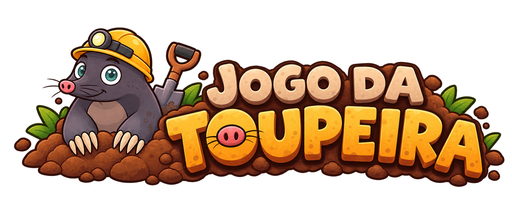

< Tabuleiro >
< Partida >
- Modalidade
- -
- Nível
- -
- Tempo restante
- 00:00
- Toupeiras acertadas
- 0
- Acertos no nível
- 0%
- Pontuação
- 0
< Suas partidas >
| Jogador | Tabuleiro | Modo | Pontuação | Nível | Data/hora |
|---|---|---|---|---|---|
| Nenhuma partida concluída ainda. | |||||

| Jogador | Tabuleiro | Modo | Pontuação | Nível | Data/hora |
|---|---|---|---|---|---|
| Nenhuma partida concluída ainda. | |||||